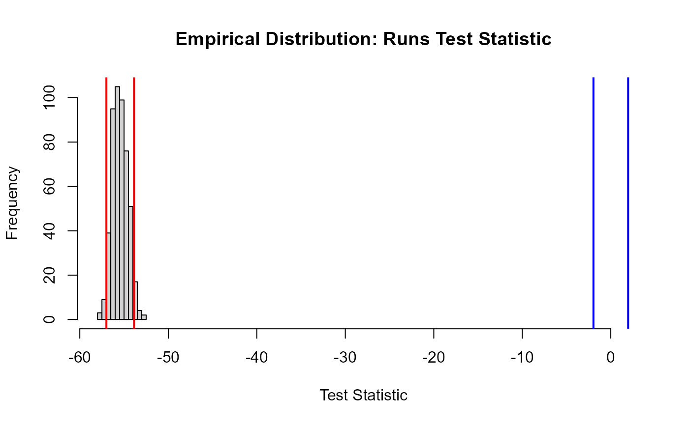
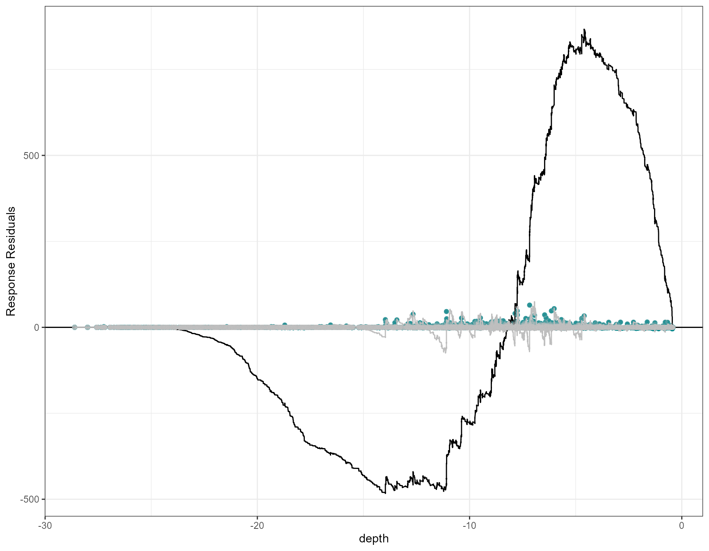
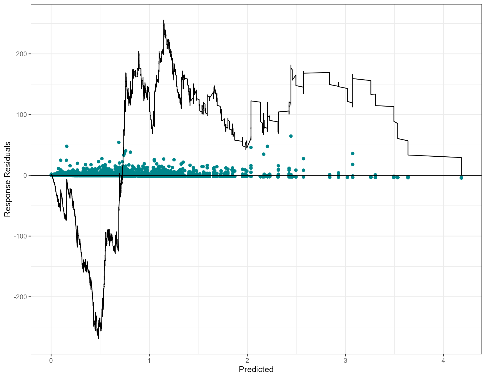
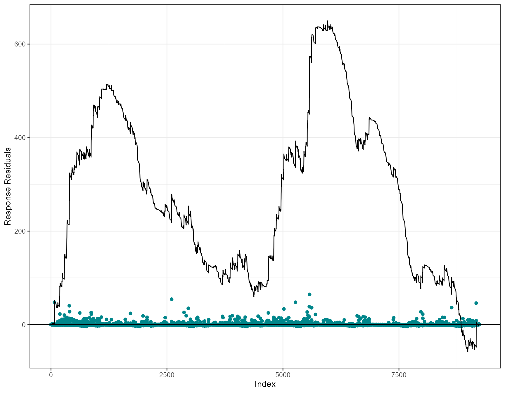

Model Diagnostics
Lindesay Scott-Hayward
2023-07-28
Source:vignettes/web/ModelDiagnostics_MRSea.Rmd
ModelDiagnostics_MRSea.RmdBefore making any decisions based on our model, we need to be happy that model assumptions are met. In this case, we need to ensure that:
- The covariates in the model are not too similar to each other (i.e. we want to avoid “collinearity”).
- The covariate relationships are well described as linear on the link scale.
- The model’s residuals are independent.
- The mean-variance relationship is appropriate (i.e. variance is proportional to the mean for the quasi-Poisson case).
Collinearity
For a reliable model, we need to ensure we don’t include variables which are too similar i.e. collinear. Let’s plot the relationship between all pair-wise covariates for the windfarm dataset.
library(MRSea)
library(dplyr)
library(ggplot2)
# load the data
data("nysted.analysisdata")
wfdata <- filter(nysted.analysisdata, impact==0, season==1)
# load the prediction grid
data("nysted.predictdata")
preddata <- filter(nysted.predictdata, impact==0, season==1)
covariates <- c("x.pos", "y.pos", "depth")
pairs(subset(wfdata, select=covariates),
upper.panel=NULL, pch=19, cex=0.3)Pairwise scatterplots for the covariates of interest.
For example, we can see that depth and
y.pos are linearly related. It is difficult to know if this
will causes cause modelling issues, as their correlation isn’t very
high. We will look at a statistic to help with decision later.
x.pos on the other hand doesn’t seem to be correlated to
any of the other covariates.
Let’s define the characteristics of collinearity:
It is a measure of the similarity between covariates. It occurs when one or more of the explanatory variables can be written as a (near) linear combination of the other explanatory variables.
It relates only to near linearity in the explanatory variables; the response variable is not considered.
-
It is a problem because it amounts to trying to fit a plane to points which lie along a line.
- This results in a very “wobbly” plane since any plane supported by a line fits the data about as well as any other plane.
- In statistical terms, this translates into (some of) the parameters defining the plane being highly uncertain (and thus having high variance).
Let’s create some fictitious data to highlight the problem (we will stick to a simple linear Gaussian model for illustration purposes). Let’s start by assuming that our two covariates \(x_1\) and \(x_2\) are independent.
set.seed(2020) # for reproducibility
N <- 250 # no. of data points
x1 <- rnorm(N) # covariate 1
x2 <- rnorm(N) # covariate 2
y <- 2*x1 - x2 + rnorm(N) # measured y
Call:
lm(formula = y ~ x1 + x2)
Residuals:
Min 1Q Median 3Q Max
-2.6991 -0.6526 -0.0606 0.6514 3.7469
Coefficients:
Estimate Std. Error t value Pr(>|t|)
(Intercept) 0.007353 0.064515 0.114 0.909
x1 1.856733 0.057356 32.372 <2e-16 ***
x2 -1.023359 0.063963 -15.999 <2e-16 ***
---
Signif. codes: 0 '***' 0.001 '**' 0.01 '*' 0.05 '.' 0.1 ' ' 1
Residual standard error: 1.013 on 247 degrees of freedom
Multiple R-squared: 0.8443, Adjusted R-squared: 0.843
F-statistic: 669.5 on 2 and 247 DF, p-value: < 2.2e-16
coefs <- coef(mdl) # extract coef to plot fitted plane3D plot
Linear fit on fictitious data with independent covariates.
The data covers the \(x_1/x_2\) space pretty evenly and thus we experience no issues. Now let’s see what happens if we increase the correlation between \(x_1\) and \(x_2\).
library(MASS) # to access mvrnorm function
set.seed(1035) # for reproducibility
rhos <- c(0.5, 0.85, 0.95, 1.0)
mdl <- list() # save models
# Loop across all correlation coefficients
for (i in seq(length(rhos)))
{
# Simulate data
x <- mvrnorm(n=N, mu=rep(0, 2),
Sigma=matrix(c(1, rhos[i], rhos[i], 1),
nrow=2))
x1 <- x[, 1]; x2 <- x[, 2]
y <- 2*x1 - x2 + rnorm(N) # measured y
# Fit a linear Gaussian model
mdl[[i]] <- lm(y~x1+x2)
}wgl
3
Call:
lm(formula = y ~ x1 + x2)
Residuals:
Min 1Q Median 3Q Max
-3.07340 -0.67261 0.01242 0.69874 2.55412
Coefficients:
Estimate Std. Error t value Pr(>|t|)
(Intercept) -0.08337 0.06870 -1.214 0.226
x1 2.07649 0.08487 24.468 <2e-16 ***
x2 -1.06416 0.08090 -13.154 <2e-16 ***
---
Signif. codes: 0 '***' 0.001 '**' 0.01 '*' 0.05 '.' 0.1 ' ' 1
Residual standard error: 1.086 on 247 degrees of freedom
Multiple R-squared: 0.7081, Adjusted R-squared: 0.7057
F-statistic: 299.5 on 2 and 247 DF, p-value: < 2.2e-16
Call:
lm(formula = y ~ x1 + x2)
Residuals:
Min 1Q Median 3Q Max
-2.62974 -0.68952 0.02637 0.69161 2.08312
Coefficients:
Estimate Std. Error t value Pr(>|t|)
(Intercept) 0.11495 0.06113 1.881 0.0612 .
x1 1.90114 0.12367 15.373 < 2e-16 ***
x2 -0.90031 0.12098 -7.442 1.64e-12 ***
---
Signif. codes: 0 '***' 0.001 '**' 0.01 '*' 0.05 '.' 0.1 ' ' 1
Residual standard error: 0.9656 on 247 degrees of freedom
Multiple R-squared: 0.6299, Adjusted R-squared: 0.6269
F-statistic: 210.2 on 2 and 247 DF, p-value: < 2.2e-16
Call:
lm(formula = y ~ x1 + x2)
Residuals:
Min 1Q Median 3Q Max
-3.1832 -0.6632 0.0729 0.7506 2.9870
Coefficients:
Estimate Std. Error t value Pr(>|t|)
(Intercept) -0.02020 0.06453 -0.313 0.755
x1 2.23222 0.20743 10.761 < 2e-16 ***
x2 -1.22437 0.20230 -6.052 5.27e-09 ***
---
Signif. codes: 0 '***' 0.001 '**' 0.01 '*' 0.05 '.' 0.1 ' ' 1
Residual standard error: 1.017 on 247 degrees of freedom
Multiple R-squared: 0.536, Adjusted R-squared: 0.5323
F-statistic: 142.7 on 2 and 247 DF, p-value: < 2.2e-16
Call:
lm(formula = y ~ x1 + x2)
Residuals:
Min 1Q Median 3Q Max
-2.53145 -0.65892 0.04813 0.61670 2.93168
Coefficients: (1 not defined because of singularities)
Estimate Std. Error t value Pr(>|t|)
(Intercept) -0.06531 0.06250 -1.045 0.297
x1 0.97552 0.05920 16.479 <2e-16 ***
x2 NA NA NA NA
---
Signif. codes: 0 '***' 0.001 '**' 0.01 '*' 0.05 '.' 0.1 ' ' 1
Residual standard error: 0.9862 on 248 degrees of freedom
Multiple R-squared: 0.5227, Adjusted R-squared: 0.5207
F-statistic: 271.5 on 1 and 248 DF, p-value: < 2.2e-163D plot
Linear fit on fictitious data with covariates of varying levels of correlation.
As the correlation coefficient between \(x_1\) and \(x_2\) increases, so do the standard errors of the regression coefficients. Up until \(\rho=1\), when \(x_1\) and \(x_2\) are colinear i.e. their data points lie on a single line in the \(x_1/x_2\) space, and the model fails to fit due to singularities.
This is due to the fact that in a collinear situation the points can be well predicted by any plane running through their major axis (along the line). It is just the slope perpendicular to the major axis (which is a function of the \(\beta\)’s) that can’t be well predicted. This is unsurprising since the points barely extend in the direction perpendicular to the line, and thus contain little information on the slope of the plane in this direction.
Collinearity is not an inference issue if predictions are all that is required. However, if there is interest in the slope parameters (i.e. the \(\beta\)’s) or the size of the standard errors about the coefficients are important, then collinearity should be avoided.
Detecting collinearity
Collinearity can be diagnosed by plotting the covariates against each other, but it can be automated by employing numerical measures (e.g. VIFs). This is particularly useful when dealing with a large number of covariates.
Variance Inflation Factors (VIFs) are a useful measure of collinearity. They return one value per explanatory variable and are based on the \(R^2\) you would get when regressing each explanatory variable on the others.
- The VIF for the \(j\)th explanatory variable is \(\mbox{VIF}_j=\frac{1}{(1-R^2_j)}\), where \(R^2_j\) is the squared multiple correlation coefficient (coefficient of determination) of the \(j^\text{th}\) variable with the other variables.
- The closer \(R^2_j\) is to 1, the higher the collinearity and the VIF.
If any of the covariates have more than one regression coefficient
associated with them (e.g. Phase), then generalised
variance-inflation factors (GVIFs) are calculated (Fox and Monette 1992). This generalises the
notion of variance inflation by considering the relative size of the
joint confidence region/ellipse (the generalisation of the confidence
interval for multiple coefficients) for the coefficients associated with
a related set of regressors. The resulting measure is called a
generalised variance inflation factor (GVIF). If there are \(p\) regressors in a term, then GVIF\(^{1/(2p)}\) is a one-dimensional expression
of the decrease in precision of estimation due to collinearity.
simpleModel <- glm(response ~ x.pos + y.pos + depth + offset(log(area)), family="quasipoisson", data=nysted.analysisdata)
# The vif() function is in the car package
car::vif(simpleModel) x.pos y.pos depth
1.486561 5.201859 4.655251 The VIFs suggest that there are perhaps some collinearity issues. The
numerical outputs of the VIF indicate that the confidence intervals for
the y.pos parameter are approximately \(\sqrt{5.2}\) \(=\) 2.3 times wider than they would be
without depth in the model. This is by no means a bad case
of collinearity and inline with what we’ve observed in the figure
above.
In contrast, let’s assume that depth was measured using
two techniques, sonar and LiDAR.
We would expect both measurements to be highly correlated and that could
cause some fitting issues. Let’s see what happens:
set.seed(1045) # for reproducibility
# Add DepthSonar and DepthLiDAR to our data frame
wfdata$DepthSonar <- wfdata$depth
wfdata$DepthLiDAR <- wfdata$DepthSonar + rnorm(nrow(wfdata),
mean=0,
sd=0.2)
# Fit model replace Depth with DepthSonar and DepthLiDAR
glmFitColinear <- glm(response ~ x.pos + y.pos + DepthSonar +
DepthLiDAR ,
offset=log(area), family=quasipoisson,
data=wfdata)
summary(glmFitColinear)
Call:
glm(formula = response ~ x.pos + y.pos + DepthSonar + DepthLiDAR,
family = quasipoisson, data = wfdata, offset = log(area))
Deviance Residuals:
Min 1Q Median 3Q Max
-3.4643 -1.4330 -0.8379 -0.3869 18.2078
Coefficients:
Estimate Std. Error t value Pr(>|t|)
(Intercept) 1.340e+03 2.519e+02 5.319 1.25e-07 ***
x.pos 1.337e-03 1.029e-02 0.130 0.897
y.pos -2.210e-01 4.120e-02 -5.366 9.74e-08 ***
DepthSonar -5.847e-02 5.252e-01 -0.111 0.911
DepthLiDAR 3.551e-01 5.211e-01 0.681 0.496
---
Signif. codes: 0 '***' 0.001 '**' 0.01 '*' 0.05 '.' 0.1 ' ' 1
(Dispersion parameter for quasipoisson family taken to be 10.75223)
Null deviance: 4987.6 on 1153 degrees of freedom
Residual deviance: 4007.2 on 1149 degrees of freedom
AIC: NA
Number of Fisher Scoring iterations: 7
car::vif(glmFitColinear) x.pos y.pos DepthSonar DepthLiDAR
1.428456 5.225356 801.704645 792.806730 Including DepthSonar and DepthLiDAR results
in a GVIF of 801.7, confirming this collinearity problem and the
associated issues with model stability.
Dealing with collinearity
What do you do when you have collinearity present? The two commonest options are to centre covariates or to omit either of the troublesome covariates from the model completely. In many cases, centering the covariate doesn’t help and dealing with collinearity necessarily involves some model selection1. You can fit models with either one of the variables and use some kind of criterion (e.g. AIC or cross-validation) to choose the better of the two models.
Nonlinearity on the link scale
So far, we’ve assumed that the relationships between the covariates and the response on the link scale are linear. If this is unreasonable, model predictions (and any associated confidence intervals) can be poor.
We can examine this linearity (on the link scale) assumption by plotting the Pearson residuals against each of our continuous covariates. The Pearson residuals are the “raw” residuals (response residuals) divided by the square root of the variance function \(v(\cdot)\). So for the Poisson model \(\hat{\epsilon_i}^{\text{pearson}}=\frac{y_i-\hat{y_i}}{\sqrt{\hat{y_i}}}\)
Recall, if the relationship is not well described by the model, the Pearson residuals will exhibit a systematic pattern. Let’s simulate such a scenario.
set.seed(1863) # for reproducibility
N <- 250 # no. of data points
df <- NULL
df$x <- runif(N, -3, 3) # covariate
# The "real" y is generated by x^2 rather than x
df$y <- 2*df$x^2 + rnorm(N)
# Fit model
mdl <- lm(y ~ x, data=df)
summary(mdl)
Call:
lm(formula = y ~ x, data = df)
Residuals:
Min 1Q Median 3Q Max
-7.509 -4.840 -1.014 4.252 13.362
Coefficients:
Estimate Std. Error t value Pr(>|t|)
(Intercept) 6.03493 0.34389 17.549 <2e-16 ***
x 0.07479 0.19576 0.382 0.703
---
Signif. codes: 0 '***' 0.001 '**' 0.01 '*' 0.05 '.' 0.1 ' ' 1
Residual standard error: 5.437 on 248 degrees of freedom
Multiple R-squared: 0.0005882, Adjusted R-squared: -0.003442
F-statistic: 0.146 on 1 and 248 DF, p-value: 0.7028
# Plot Pearson residuals vs covariate
plot(df$x, residuals(mdl, type="pearson"),
ylab="Pearson residuals", xlab="Covariate (x)", pch=19)
abline(h=0, lty=2, col="lightgrey", lwd=4)
Pearson residuals vs a fictitious covariate \(x\) when mdl <- lm(y ~ x)
and \(y\) was simulated using \(x^2\).
There is an obvious systematic pattern that tells us that our linear predictor for the mean is not doing a good job at describing the observed data. Let’s include \(x^2\) as another covariate in the model and see what happens.
Call:
glm(formula = y ~ x + xsq, data = df)
Deviance Residuals:
Min 1Q Median 3Q Max
-2.62393 -0.63796 -0.01024 0.61561 2.89014
Coefficients:
Estimate Std. Error t value Pr(>|t|)
(Intercept) -0.08927 0.09180 -0.973 0.332
x 0.02745 0.03432 0.800 0.425
xsq 1.98491 0.02244 88.457 <2e-16 ***
---
Signif. codes: 0 '***' 0.001 '**' 0.01 '*' 0.05 '.' 0.1 ' ' 1
(Dispersion parameter for gaussian family taken to be 0.9082371)
Null deviance: 7335.30 on 249 degrees of freedom
Residual deviance: 224.33 on 247 degrees of freedom
AIC: 690.39
Number of Fisher Scoring iterations: 2
# Plot Pearson's residuals vs covariate
plot(df$x, residuals(mdl2, type="pearson"),
ylab="Pearson residuals", xlab="Covariate (x)", pch=19)
abline(h=0, lty=2, col="lightgrey", lwd=4)
Pearson residuals vs a fictitious covariate \(x\) when
mdl <- lm(y ~ x + xsq) and \(y\) was simulated using \(x^2\).
Now there is no structure in the Pearson residuals. They are all scattered evenly around zero, suggesting that our model’s assumptions are met and we have a good fit.
To aid visual inspection, a quadratic term can be fitted for each predictor (e.g. \(\text{Depth}^2\)) in the regression model directly as a test for nonlinearity. This provides a \(z\)/\(t\)-test statistic and associated \(p\)-value for each quadratic term in the model, as a formal test for nonlinearity (Tukey’s test for non-additivity). While this test will not be appropriate for all types of departures from linearity, small \(p\)-values for this test indicate nonlinearities on the link scale.
Moreover, these residual plots can be augmented with a data-driven
curve. The handy residualPlots
function in the car package lets us do all of the above;
plotting the Pearson residuals against all other covariates, compute a
curvature test for each of the plots by adding a quadratic term and
testing the quadratic to be zero (Tukey’s test for non-additivity) and
overlays a smooth curve for the residuals.
library(car)
residualPlots(simpleModel,
type="pearson",
quadratic=TRUE,
smooth=list(smoother=gamLine, col="#377eb8"),
fitted=FALSE,
col.quad="#e41a1c",
col="grey",
pch=19,
cex=0.3,
ylim=c(-5, 5))
Residual plots for the glmFitOD3 model. Red line is the
fitted quadratic and the blue line is the fitted smooth curve.
Test stat Pr(>|Test stat|)
x.pos 278.5 < 2.2e-16 ***
y.pos 1305.0 < 2.2e-16 ***
depth 2252.6 < 2.2e-16 ***
---
Signif. codes: 0 '***' 0.001 '**' 0.01 '*' 0.05 '.' 0.1 ' ' 1This plot shows what we have already seen, that there are some nonlinearities on the link scale indicated by the u-shaped curve.
Both quadratic and smoother-based curves were fitted to the residual
plots for simpleModel (recall that this model was
NHAT ~ x.pos + y.pos + depth). In this case, there appear
to be some nonlinearities on the link scale as curvature is apparent in
all model covariates and the test statistic for the coefficients
associated with the quadratic term (\(\chi^2_j\)) for each covariate are all
extremely large and the associated \(p\)-values are small and significant.
Autocorrelation
So far, we’ve assumed that the model errors are independent (i.e. that our observations are independent). If the model does not capture the patterns in the response data, then some of this pattern will remain in the model residuals and present itself as positive/negative residual auto-correlation.
Let’s focus on the first 200 observations of the Nysted dataset.
ggplot() +
geom_point(aes(x=x.pos, y=y.pos, colour=transect.id),
data=nysted.analysisdata[1:200, ]) +
geom_point(aes(x.pos, y=y.pos, size=log(NHAT/area)),
colour='black',
data=subset(nysted.analysisdata[1:200, ], NHAT>0))Response data along the transects for the first 200 observations of the Nysted dataset.
To some extent, model covariates will be able to explain the similarity in these counts along transects. However, much of this pattern tends to remain unexplained by the model and is found in the model residuals.
simpleModel <- glm(response ~ x.pos + y.pos + depth + offset(log(area)), family="quasipoisson", data=nysted.analysisdata)
mdlSummary <- data.frame(Observed=simpleModel$model$response,
Fitted=predict(simpleModel,
type="response"),
Residuals=residuals(simpleModel,
type="pearson"),
Index=seq(length(simpleModel$model$response)))
ggplot(mdlSummary[1:200, ]) +
geom_line(aes(x=Index, y=Fitted, col="Fitted"), lwd=1) +
geom_line(aes(x=Index, y=Observed, col="Observed"), lwd=1) +
scale_color_manual(values=c('Observed'="#377eb8",
'Fitted'="#4daf4a")) +
labs(color="") +
ylab("Bird counts")
Observed bird counts (blue line) and model (simpleModel)
fitted values (green line) for the first 200 observations.
ggplot(mdlSummary[100:200, ]) +
geom_line(aes(x=Index, y=Residuals, col="Residuals"), lwd=1) +
scale_color_manual(values=c('Residuals'="#e41a1c")) +
labs(color="") +
ylab("Bird counts")
Pearson residuals for the first 200 observations for model
simpleModel.
We can visualise this problem by an autocorrelation function plot, which depicts the estimated correlation between the residuals and the lag \(k\) residuals (see acf in R).
Autocorrelation plot for the residuals of simpleModel.
For lags up to about \(k=7\) the residuals remain correlated. For uncorrelated residuals we expect acf=1 at lag=0, and acf=0 otherwise.
Diagnosing autocorrelation using the runs test
Non-independence in model residuals can be diagnosed using the Wald-Wolfowitz runs test (Wald and Wolfowitz 1943):
- This test assigns a “sign” to each residual: positive residuals are labelled +1’s and negative residuals are labelled -1’s.
- The number of uninterrupted strings (“runs”) of positive and negative residuals when looked at in sequence (e.g. time order) is then calculated.
- Too few (long) runs provide evidence of positive correlation, while too many (short) runs provide evidence of negative correlation.
# Assign sign
mdlSummary$Sign <- ifelse(mdlSummary$Residuals>0, 1, -1)
ggplot(mdlSummary[1:200, ]) +
geom_line(aes(x=Index, y=Sign, col="Sign"), lwd=1) +
scale_color_manual(values=c('Sign'="black")) +
labs(color="") +
ylab("Sign of the residuals")
The sign of model (simpleModel) residuals for the first 200
observations.
set.seed(1345) # for reproducibility
dummyDta <- data.frame(Sign=ifelse(rnorm(200)>0, 1, -1),
Index=seq(200))
ggplot(dummyDta) +
geom_line(aes(x=Index, y=Sign, col="Sign"), lwd=1) +
scale_color_manual(values=c('Sign'="black")) +
labs(color="") +
ylab("Sign of the residuals")The sign of the residuals, if residuals were independent.
The runs test compares the observed number of runs (\(T\)) with what’s expected under independence (\(\text{E}[T]\)) and adjusted for the variance (\(\text{var}[T]\)) to give a test statistic \(W_z\) which has a standard normal distribution (\(\mathcal{N}(0,1)\)).
\[ \begin{align*} \text{E}[T]&=\frac{2n_pn_n}{n_p+n_n}+1\\ \text{var}[T]&=\frac{2n_pn_n(2n_pn_n-n_p-n_n)}{(n_p+n_n)^2(n_p+n_n-1)}\\ W_Z&=\frac{T-\text{E}[T]}{\sqrt{\text{var}[T]}} \sim \mathcal{N}(0,1) \end{align*} \]
Where:
- \(n_p\) is the number of positive residuals.
- \(n_n\) is the number of negative residuals.
Values more extreme than \(\pm 2\) are considered compelling evidence against independence and consistent with positive (\(W_Z< -2\)) or negative correlation (\(W_Z> 2\)).
The runs.test
function can be found in the lawstat package in R.
Note that this test is based on the order of model residuals and thus has many uses, it can be used to check for:
- Time dependence (by calculating runs based on residuals in time order).
- Poorly specified covariate relationships (by calculating runs based on ordered covariate value).
Let’s simulate two models in order to show the runs test in action.
- Model A: The linear predictor is just a function of a single covariate \(x\) (\(i\) is the observation index).
\[ \begin{align*} y^{(A)}_i & \sim \text{Poisson}(\mu^{(A)}_i)\\ \log \mu^{(A)}_i & = \beta_0 + \beta_1x_i \end{align*} \]
set.seed(1345) # for reproducibility
NSample <- 2000 # total no. of samples
# Model parameters
b0 <- 0.1
b1 <- 0.1
# Generate covariate and "observed" data
x <- rep(1:20, times=NSample/20)
etaA <- b0 + b1*x
muA <- exp(etaA)
yA <- rpois(NSample, muA)- Model B: The linear predictor is a function of a measured covariate \(x\) and a sine wave/function to mimic factors that exist in the environment that affect bird numbers but that we cannot directly observe. The \(\beta\)’s are assumed the same in both models.
\[ \begin{align*} y^{(B)}_i & \sim \text{Poisson}(\mu^{(B)}_i)\\ \log \mu^{(B)}_i & = \beta_0 + \beta_1x_i + 2\sin{i} \end{align*} \]
set.seed(1345) # for reproducibility
etaB <- b0 + b1*x + sin(1:NSample)*2
muB <- exp(etaB)
yB <- rpois(NSample, muB)Let’s plot the mean functions (on the log link scale) \(\log \mu^{(A)}\) and \(\log \mu^{(B)}\) used to simulate the data as a function of the covariate \(x\).
plot(x[1:20], etaB[1:20],
type="l", xlab="Covariate (x)",
ylab="Model on the link scale (log(mu))",
lwd=3, lty=2, col="#377eb8")
lines(x[1:20], etaA[1:20], lwd=3, col="#4daf4a")
legend("topleft", c("Model A", "Model B"),
col=c("#4daf4a", "#377eb8"), lty=c(1,2), lwd=3, bty="n")
The two mean functions (on the log link scale) used to simulate the data as a function of the covariate \(x\).
We can already see that in the absence of a predictor to explain the cyclic nature of \(\log \mu^{(B)}\), the residuals for model B will remain correlated (i.e. covariate \(x\) on its own cannot explain this variation). Let’s fit a Poisson GLM to each of these simulated datasets.
Call:
glm(formula = yA ~ x, family = poisson)
Deviance Residuals:
Min 1Q Median 3Q Max
-2.9265 -0.7876 -0.1631 0.5605 3.3844
Coefficients:
Estimate Std. Error z value Pr(>|z|)
(Intercept) 0.102565 0.032382 3.167 0.00154 **
x 0.098975 0.002222 44.545 < 2e-16 ***
---
Signif. codes: 0 '***' 0.001 '**' 0.01 '*' 0.05 '.' 0.1 ' ' 1
(Dispersion parameter for poisson family taken to be 1)
Null deviance: 4401.7 on 1999 degrees of freedom
Residual deviance: 2224.8 on 1998 degrees of freedom
AIC: 7816.7
Number of Fisher Scoring iterations: 5
Call:
glm(formula = yB ~ x, family = poisson)
Deviance Residuals:
Min 1Q Median 3Q Max
-6.103 -3.007 -1.506 1.778 9.524
Coefficients:
Estimate Std. Error z value Pr(>|z|)
(Intercept) 0.902406 0.021547 41.88 <2e-16 ***
x 0.101094 0.001474 68.60 <2e-16 ***
---
Signif. codes: 0 '***' 0.001 '**' 0.01 '*' 0.05 '.' 0.1 ' ' 1
(Dispersion parameter for poisson family taken to be 1)
Null deviance: 26516 on 1999 degrees of freedom
Residual deviance: 21334 on 1998 degrees of freedom
AIC: 26951
Number of Fisher Scoring iterations: 5Let’s plot the Pearson residuals for both models for the first 50 observations:
par(mfrow=c(1, 2))
plot(residuals(fitA, type="pearson")[1:50],
type="l", ylab="Pearson residuals", col="#4daf4a",
main="Independent residuals (Model A)")
plot(residuals(fitB, type="pearson")[1:50],
type="l", ylab="Pearson residuals", col="#377eb8",
main="Correlated residuals (Model B)")The first 50 Pearsons residuals for model A (independent residuals) and model B (correlated residuals).
Using the runs test confirm the above results.
library(lawstat) # to access the runs.test function
# Model A
runs.test(residuals(fitA, type="pearson"))
Runs Test - Two sided
data: residuals(fitA, type = "pearson")
Standardized Runs Statistic = -1.3856, p-value = 0.1659
Runs Test - Two sided
data: residuals(fitB, type = "pearson")
Standardized Runs Statistic = -15.746, p-value < 2.2e-16Positive correlation affects model selection
Positive correlation in model residuals can lead us to conclude that irrelevant variables are important. To illustrate this, let’s now add a covariate which is unrelated to the response and entirely made of randomly generated noise (\(x_{\text{noise}}\)).
# Model A (independent residuals)
fitANoise <- glm(yA ~ x + xnoise, family=poisson)
summary(fitANoise )
Call:
glm(formula = yA ~ x + xnoise, family = poisson)
Deviance Residuals:
Min 1Q Median 3Q Max
-2.9237 -0.8005 -0.1598 0.5687 3.3761
Coefficients:
Estimate Std. Error z value Pr(>|z|)
(Intercept) 0.103150 0.032382 3.185 0.00145 **
x 0.098940 0.002222 44.531 < 2e-16 ***
xnoise 0.010181 0.011449 0.889 0.37385
---
Signif. codes: 0 '***' 0.001 '**' 0.01 '*' 0.05 '.' 0.1 ' ' 1
(Dispersion parameter for poisson family taken to be 1)
Null deviance: 4401.7 on 1999 degrees of freedom
Residual deviance: 2224.0 on 1997 degrees of freedom
AIC: 7818
Number of Fisher Scoring iterations: 5
Anova(fitANoise )Analysis of Deviance Table (Type II tests)
Response: yA
LR Chisq Df Pr(>Chisq)
x 2175.74 1 <2e-16 ***
xnoise 0.79 1 0.3738
---
Signif. codes: 0 '***' 0.001 '**' 0.01 '*' 0.05 '.' 0.1 ' ' 1
# Model B (correlated residuals)
fitBNoise <- glm(yB ~ x + xnoise, family=poisson)
summary(fitBNoise)
Call:
glm(formula = yB ~ x + xnoise, family = poisson)
Deviance Residuals:
Min 1Q Median 3Q Max
-6.436 -3.016 -1.467 1.813 9.762
Coefficients:
Estimate Std. Error z value Pr(>|z|)
(Intercept) 0.904701 0.021521 42.038 <2e-16 ***
x 0.100826 0.001472 68.496 <2e-16 ***
xnoise 0.068517 0.007573 9.047 <2e-16 ***
---
Signif. codes: 0 '***' 0.001 '**' 0.01 '*' 0.05 '.' 0.1 ' ' 1
(Dispersion parameter for poisson family taken to be 1)
Null deviance: 26516 on 1999 degrees of freedom
Residual deviance: 21252 on 1997 degrees of freedom
AIC: 26871
Number of Fisher Scoring iterations: 5
Anova(fitBNoise)Analysis of Deviance Table (Type II tests)
Response: yB
LR Chisq Df Pr(>Chisq)
x 5164.2 1 < 2.2e-16 ***
xnoise 81.9 1 < 2.2e-16 ***
---
Signif. codes: 0 '***' 0.001 '**' 0.01 '*' 0.05 '.' 0.1 ' ' 1We can now see that \(x_{\text{noise}}\) was found to be significantly related to \(y^{(B)}\) but not to \(y^{(A)}\). This is problematic, as \(x_{\text{noise}}\) offers no predictive capacity whatsoever, yet it would’ve been retained in model B.
To ensure this result was not an anomaly, let’s repeat this process 5000 times to examine the long-run behaviour.
set.seed(83195) # for reproducibility
NRepeat <- 5000 # np. of repeats
# Counter for no. times we keep xnoise in model A or B
keepNoiseA <- 0
keepNoiseB <- 0
# Counter for no. times we detect correlation in residuals
runsTestA <- 0
runsTestB <- 0
# Loop NRepeat times
for (i in seq(NRepeat))
{
# Generate data for the same muA & muB
yA <- rpois(NSample, muA)
yB <- rpois(NSample, muB)
xnoise <- rnorm(NSample)
# Fit models
fitANoise <- glm(yA ~ x + xnoise, family=poisson)
fitBNoise <- glm(yB ~ x + xnoise, family=poisson)
# Extract p-values
pA <- coef(summary(fitANoise))["xnoise", "Pr(>|z|)"]
pB <- coef(summary(fitBNoise))["xnoise", "Pr(>|z|)"]
# Update counter if p-value is sig to 0.05 level
if (pA < 0.05) keepNoiseA <- keepNoiseA + 1
if (pB < 0.05) keepNoiseB <- keepNoiseB + 1
# Perform runs.test on both model's residuals
runA <- runs.test(residuals(fitANoise, type="pearson"))
runB <- runs.test(residuals(fitBNoise, type="pearson"))
# Update counter if p-value is sig to 0.05 level
if (runA$p.value < 0.05) runsTestA <- runsTestA + 1
if (runB$p.value < 0.05) runsTestB <- runsTestB + 1
}-
Model A
- \(x_{\text{noise}}\) was falsely identified as statistically significant just 5.56% of the time (in line with the expected false positive rate of 5%).
- The runs test indicated the residuals were non-independent for 5.36% of the simulated sets using the 5% level to determine statistical significance (and we do expect this to be around 5%).
-
Model B:
- \(x_{\text{noise}}\) was falsely identified as statistically significant 60.92% of the time!
- The runs test suggested the residuals were positively correlated 100% of the time, using the 5% level to determine statistical significance.
Let’s see if positive residual correlation is also apparent in our
basic Nysted model simpleModel:
Runs Test - Two sided
data: residuals(simpleModel, type = "pearson")
Standardized Runs Statistic = -65.03, p-value < 2.2e-16Mean-variance relationship
We can assess the mean-variance relationship by looking at the fitted values versus the residuals. To ease visual inspection we “bin” the fitted data and compute the variance of the residuals for each “bin”.
Let’s simulate some Poisson data to show this.
set.seed(7345) # for reproducibility
NSample <- 2000 # total no. of samples
# Model parameters
b0 <- 0.1
b1 <- 0.25
# Generate covariate and "observed" data
x <- rep(1:20, times=NSample/20)
etaA <- b0 + b1*x
muA <- exp(etaA)
y <- rpois(NSample, muA)
# Fit model
mdl <- glm(y ~ x, family=poisson)We can look at the “raw” residuals (\(\hat{\epsilon_i}^{\text{raw}}=y_i-\hat{y_i}\)), in which case, if the model assumptions are met, we should observe the assumed mean-variance relationship. So for the Poisson model we should see the variance increasing with the mean (Poisson model assumes that the variance is equal to the mean).
# Plot 1 - Fitted values vs raw residuals
p.raw <- ggplot() +
geom_point(aes(x=fitted(mdl), y=residuals(mdl, type="response"))) +
ylab("Raw residuals") + theme_bw()
# Plot 2 - Mean binned fitted values vs var of raw residuals
p.meanvar <- plotMeanVar(mdl, print=FALSE)
ggpubr::ggarrange(p.raw, p.meanvar, ncol=2)Mean-variance relationship for a Poisson simulated dataset using the raw residuals.
Let’s inspect the mean-variance relationship for the
simpleModel
# Plot 1 - Fitted values vs raw residuals
p.raw <- ggplot() +
geom_point(aes(x=fitted(simpleModel), y=residuals(simpleModel, type="pearson"))) +
ylab("Pearsons residuals") + theme_bw()
# Plot 2 - Mean binned fitted values vs var of raw residuals
p.meanvar <- plotMeanVar(simpleModel, print=FALSE)
ggpubr::ggarrange(p.raw, p.meanvar, ncol=2)
Mean-variance relationship for the simpleModel model using
the Pearson residuals.
There still seem to be a strong mean-variance relationship when looking at the Pearson residuals. This suggests that at least some of our modelling assumptions aren’t met, and that we may have to adjust our model specification to account for a different mean-variance relationship. For example, we are underestimating the variance of the largest fitted values.
Diagnostics using the MRSea package
Autocorrelation check
Are the residuals correlated? Make a suitable blocking structure,
within which residuals are expected to be correlated but between which
they are independent. Use runACF to assess the blocking
structure. In this case we have data collected by transect. We would
expect there to be some level of correlation along transect so we use
this for a blocking structure.
Autocorrelation function plot:
- the function uses Pearsons residuals
- each grey line is the correlation within a given transect
- the red line is the mean of these correlations across all transects
and is similar to what you would see from running the usual
acf()command.
runACF(block = nysted.analysisdata$transect.id, model = simpleModel,
suppress.printout=TRUE)
Autocorrelations of series 'residuals(simpleModel, type = "pearson")', by lag
1
0.082
plot(a)In this case there is evidence that some transects show very high correlation. Along with a plot, we can also do a statistical test to assess for independence: the runs test.
Details of the standard runs test are given above. Under the null hypothesis of independence, the test statistic is distributed N(0,1). However, when the data/residuals are highly over dispersed the standard runs test can be misleading - it fails to reject H\(_0\) when the residuals are correlated. For this reason, we have developed an empirical runs test where we simulate the test statistic distribution under independence and use this to obtain an empirical \(p\)-value for the test statistic for our data.
Empirical runs test calculation:
- Generate some data that is independent but with the similar distributional characteristics as your response data.
simData<-generateNoise(n=500,
response=fitted(simpleModel),
family='poisson',
d=summary(simpleModel)$dispersion)- Get the empirical distribution of runs test statistics
empdist<-getEmpDistribution(500, simData, simpleModel, data=nysted.analysisdata, dots=FALSE, plot = TRUE)
- Evaluate the runs test \(p\)-value using the empirical distribution found above.
Runs Test - Two sided; Empirical Distribution
data: residuals(simpleModel, type = "pearson")
Standardized Runs Statistic = -65.03, p-value < 2.2e-16Additional Diagnostic Plots
The runDiagnosticsfunction creates two diagnostic
plots:
- observed vs fitted and
- fitted vs scaled Pearsons residual plots.
Observed vs Fitted plot
Two metrics, a marginal R\(^2_m\) and the concordance correlation coefficient, are printed in the title of the plot to help assess model fit.
\[R^2_m = 1 - \frac{\sum{(y_i - \hat{y_i})^2}}{\sum{(y_i - \bar{y})^2}}\]
\[CC = \frac{2\sum{(y_i - \bar{y})(\hat{y_i} - \bar{y})}}{\sum{(y_i - \bar{y})^2}+\sum{(\hat{y_i} - \bar{y})^2}}\]
Where \(y_i\) is the \(i\)th response value, \(\hat{y_i}\) is the \(i\)th fitted value and \(\bar{y}\) is the mean of the fitted values.
runDiagnostics(simpleModel, plotting = "f")In this case, the simple model does not have a very good fit to the data as both the concordance correlation and the r squared values are low.
Scaled Pearsons Residuals
These residuals should show little to no relationship with the fitted values from the model. The red line is a locally weighted least squares regression line of all of the residuals which can be used as a guide to assess this relationship.
The scaled Pearsons residuals are residuals where the expected relationship given the distribution is taken account of including any extra dispersion estimated via the dispersion parameter. We would expect to see no pattern and even variance.
In this case, the residuals do not show any pattern (the red line is near horizontal). To assess the variance of the residuals, the mean-variance plot discussed earlier is useful here.
runDiagnostics(simpleModel, plotting = "r")
plotMeanVar(simpleModel)Influence diagnostics
If the data has some structure to it, e.g. in the form of blocks or transects, you can asses the influence each of these blocks has on the precision of parameter estimates (the standard errors associated with each coefficient) and sensitivity of model predictions. We use two statistics; COVRATIO and PRESS to assess these.
COVRATIO
This statistic signals the change in the precision of the parameter estimates when each block is omitted. - Values greater than 1 signal removing the block inflates parameter standard errors - Values less than 1 signal standard errors are smaller when that block is excluded
The influential points are those that lie outside the 95% quantile of COVRATIO statistics
PRESS
Quantifies the sensitivity of model predictions to removing each block.
- Relatively large values signal the model is sensitive to these subjects.
- Model coefficients are re-estimated when each block is omitted (one-by one) and the sum of the squared differences between the response data and the predicted values (when that subject is removed) are found.
This statistic is the sum of the squared PRESS residuals in a deletion set (block ID). The PRESS residuals are the difference between the observed value and the predicted mean, where the predicted value is obtained without the observations in question.
\[\widehat{\epsilon_{pr, i}} = y_i - X_i^-\hat{\beta}\] \[PRESS = \sum\widehat{\epsilon_{pr, i}}\]
The influential points are those that lie above the 95% quantile of PRESS statistics.
Calculating the statistics
First create the blocking structure. Here I have chosen this to be the unique transect id for each season and impact phase.
nysted.analysisdata$blockid <- paste0(nysted.analysisdata$impact,
nysted.analysisdata$season,
nysted.analysisdata$transect.id)
timeInfluenceCheck(model = simpleModel,
id = nysted.analysisdata$blockid)[1] "Calculating the influence measures will take approximately 0 minutes"
inflpoints<-runInfluence(simpleModel, id = nysted.analysisdata$blockid)[1] "Calculating COVRATIO and PRESS Statistics"If model predictions or measures of precision appear particularly sensitive to omitted blocks, first have a look at those blocks and see if there are any obvious issues with that block. Additionally you could examine model conclusions based on models with and without the potentially problematic blocks.
In practice, influential blocks are often those with a lot of observations and thus influence the parameter estimates quite highly. In this instance, the influence is perfectly normal and to be expected.
Cumulative residual plots
Cumulative residuals can be used to assess systematic over- or under- prediction, i.e. the functional form of covariates, and can be used to assess the adequacy of regression models (Lin, Wei, and Ying 2002).
On each plot the blue dots are the residuals and the black line is
the line of cumulative residual. On the covariate plots (those specified
in varlist) the grey line indicates what we would expect
from a well/over fitted covariate. i.e. one that is fitted with
excessive knots.
Let’s look at an example where depth is fitted as a linear term and then as a simple smooth term (B-spline with one knot at the mean).
# depth linear
fit.lin <- glm(formula = response ~ depth + offset(log(area)),
family = "quasipoisson", data = nysted.analysisdata)
# depth smooth
fit.sm <- glm(formula = response ~ splines::bs(depth, knots = mean(nysted.analysisdata$depth)) + offset(log(area)),
family = "quasipoisson", data = nysted.analysisdata)
# cum res of both
plotCumRes(model = fit.lin, varlist = 'depth', variableonly = TRUE)[1] "Calculating cumulative residuals"Cumulative residual plots for residuals ordered by depth as a smooth term (right) and when depth is fitted as a linear term (left). The blue points are the residual values, the black line represents the cumulative residuals. The grey line in the background is what we would expect the cumulative residuals to be if depth was modelled with more flexibility.
plotCumRes(model = fit.sm, varlist = 'depth', variableonly = TRUE)[1] "Calculating cumulative residuals"Cumulative residual plots for residuals ordered by depth as a smooth term (right) and when depth is fitted as a linear term (left). The blue points are the residual values, the black line represents the cumulative residuals. The grey line in the background is what we would expect the cumulative residuals to be if depth was modelled with more flexibility.
When depth is modelled linearly, the plot shows systematic and severe over and then under prediction. As a smooth term, the black and grey lines are more similar and shows that depth is modelled more appropriately.
By default (variableonly = FALSE), cumulative residual
plots are also returned for residuals ordered predicted value and index
of observations (temporally).
plotCumRes(model = simpleModel, varlist="depth")[1] "Calculating cumulative residuals"
- as we’ve shown, depth as a linear term is inappropriate with systematic over and under prediction.
- Systematic over prediction at predicted counts less than one and systematic under prediction at predicted counts > 1
- Evidence of systematic under and over prediction for the full data timeline. Like the runs profiles described earlier, we would expect to see more switching between positive and negative (under and over prediction).